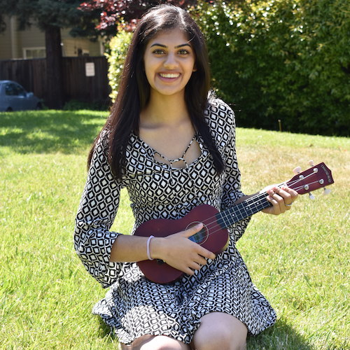
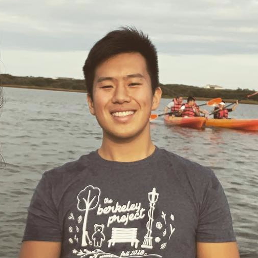

Staff
Instructors¶
|
ramesh_s@berkeley.edu
|

Teaching Assistants (uGSIs)¶
|

Aanika Shah (bio) I'm a junior studying IEOR and Data Science with an emphasis in industrial and business analytics. This is my fourth semester on staff of this amazing class! I love watching sports, traveling, playing board games (Catan!!), and listening to music.
aanika.shah@berkeley.edu
|
 Adele Bloch (bio) Hi! My name is Adele and I am a senior majoring in both Business and Data Science. Data 8 has been one of my favorite classes at Cal, which is why I am so excited for my sixth semester on course staff. In my free time, you can find me running, hiking, singing, and looking for new food spots around Berkeley.
adele.bloch@berkeley.edu
|
 Aidan De Angelis (bio) I'm a 4th year Computer Science major from Davis, CA. I took Data 8 my Fall semester freshman year and I absolutely fell in love with it. In my free time I like to hike, play paintball, and scope deals on Craigslist. I hope you learn to love Data 8 just as much as I do and I'm stoked to meet you all!
aidandeangelis@berkeley.edu
|
 Alan Liang (bio) Hi! I'm a 4th year CS and Economics major sort of from Shanghai, China. Some things I enjoy include discovering good food, shibes, consumerism, and data science; guess which one is my favorite ;). Data 8 has been one of my favorite classes at Berkeley and I'm excited to be part of the course staff this semester. Looking forward to a great semester and meeting you all!
alanliang@berkeley.edu
|
 Alvin Yu (bio) Hey everyone! My name is Alvin and I'm a third year data science and business major from Temecula, CA. I'm passionate about sports & running, education, and currently wanting to learn more about investing. I'm excited to give back to Data 8 because it's my favorite course and kick-started my data science journey by providing an accessible & exciting way to learn Python/work with data!
alvinyu27@berkeley.edu
|
 Ananya Krishnan (bio) Hey! I am a junior studying cognitive and computer science from sunny San Diego. I am interested in learning about cognitive processes, decision making, and economics with modeling and data. In my free time, I enjoy watching TED Talks, going on hikes, attempting to bake, and eating lots of ice cream. I am excited to be part of the Data 8 staff this year and hope to meet you this Spring!
ananya.krishnan@berkeley.edu
|
 Angela Guan (bio) My name is Angela Guan, and I am from San Jose, CA. I am a Junior studying data science, and I love Data 8! I am on the Cal Table Tennis team, and I enjoy going to beaches, hiking, cooking, traveling, and eating with friends. Looking forward to meeting you!
guanangela@berkeley.edu
|
 Anna Burns (bio) I am a senior majoring in Data Science with an emphasis in Industrial and Business Analytics. I have been a part of Data 8 for the past six semesters and it is still one of my favorite classes. I'm from a small town in the NorCal foothills and love being out in nature. I also like cooking and baking and of course Data 8!
anna.burns@berkeley.edu
|
 Annie Nguyen (bio) I like to read staff bios too!
vienannguyen@berkeley.edu
|
 Ashley Quiterio (bio) Hey everyone! I'm a junior majoring in Data Science, and I hope to use what I learn to make a social impact. I look forward to getting to know y'all!
ashleyquiterio@berkeley.edu
|
Austen Zhu (bio) I'm a senior CS major. This will be my fifth time teaching some variant of this class. AMA.
austenzhu@berkeley.edu
|
 Avery Yip (bio) I like to lurk on my GSI's bio too.
averyyip@berkeley.edu
|
|
Caroline Chen (bio) I'm currently a junior double majoring in Statistics and Data Science. This is my 5th semester on Data 8 staff, and I'm super excited for this semester!
carolinejchen@berkeley.edu
|
Colby Lewis (bio) Happy to be taking Data 8 all the way to my last semester at Cal! When I'm not taking or working for class, I like to cook, listen to podcasts, and have friends over for board game nights. Sometimes the podcasts spill over into class time.
colbylewis2020@berkeley.edu
|
Deven Barth (bio) My name is Deven and I'm a 3rd year student studying data science. Prior to coming to Berkeley, I've lived in quite a few places across the country, including Kentucky, Arizona, as well as the Bay Area itself. Although this is my 3rd semester on the Data 8 course staff, this will be my first time as a TA, and I'm really excited for another great semester!
devennb@berkeley.edu
|
 Emily Zou (bio) Hi everyone! I am a third year CS major from the DC area. In my free time, I enjoy skating with the Cal Figure Skating Team, figuring out new ways to make coffee, and browsing Instagram for penguin pictures. I'm excited to be on staff again and I look forward to meeting you all!
emilykzou@berkeley.edu
|
 George Nacouzi (bio) Hi! I am a 4th year studying Applied Math and Data Science. I have previously lab assisted and tutored for Data 8, tutored math courses, and founded/facilitated a DeCal. Besides teaching, I love playing ultimate frisbee!
gnacouzi@berkeley.edu
|
 Gregory Du (bio) Pretty crazy to me that some of you really just wake up everyday and digest lactose.
gregoryd2017@berkeley.edu
|
 Gregory King (bio) Hey everyone! I'm a third year Economics major from the LA area. Outside of Data 8, I love watching stand up comedy, making Spotify playlists, or exploring SF!
gregking22@berkeley.edu
|
 Hubert Luo (bio) I'm a fourth year from Toronto, Canada studying statistics and applied math. In addition to helping teach Data 8, I’m involved with Berkeley Model United Nations and researching the effect of gender and race on academic talks. I'm interested in applied statistics in connection with finance and political science.
hubertluo@berkeley.edu
|
 Ian Castro (bio) Hello! I am a third-year studying Media Studies and Microbial Biology from the East Bay. This is my fifth semester on Data 8 staff and my third semester being a uGSI, and I also teach the graduate version of Data 8. I hope to make the course as fun for you as it was for me when I took the class my first semester at Cal, so please feel free to ask me anything!
castro.ian@berkeley.edu
|
Irene Wang (bio) I am a third year statistics and economics double major from San Diego. I love data science, movies, and art. I am so excited to have a great semester with you!
irenerwang@berkeley.edu
|

Jifu Li (bio) I'm from Jacksonville, Florida. I have pet gators in my backyard. I eat pub subs for every meal. My neighbor once headlined as Florida man.
jifu.li@berkeley.edu
|
Juliann Nguyen (bio) Hi! I'm a senior studying Statistics. When I have some free time, I enjoy tv show binging and seeing dogs in real life, photos, or videos. I'm super excited to be on staff again this semester and am looking forward to working with you all!
juliannnguyen@berkeley.edu
|
 Katherine Tsai (bio) Hi everyone! I am a junior from Palos Verdes, CA studying Data Science and Cognitive Science. In my free time I like to take naps, dance, or get gelato with friends. Data 8 has been one of my favorite classes so far, and I am excited to get to know everyone this semester!
katherinetsai@berkeley.edu
|
 Krista Hayakawa (bio) Hi! I'm a fourth year studying Data Science with a minor in Computer Science. I took Data8 my first semester at Cal, and it has been my favorite class at Cal! I am on the cheer team (if you couldn't tell from my pic), and I love watching Grey's Anatomy!
keh7@berkeley.edu
|
 Lillian Louie (bio) Hi everyone! I'm a senior majoring in data science. I am super excited to be back in the spring to teach. Data8 has definitely changed my college experience, and I hope you'll enjoy the class as much as I did!
lillianlouie@berkeley.edu
|
 Logan Ritter (bio) I am a third year majoring in Computer Science and completing a minor in Data Science. Outside of school I enjoy playing ultimate frisbee and lifting. I am excited to teach one of my favorite courses and look forward to getting to know you.
lritter@berkeley.edu
|
 Maya Rao (bio) Hi, I’m Maya and I’m a fourth-year political economy major and Russian minor! I’m passionate about almond croissants, British Tudor history and my thesis, which I talk about all the time. Feel free to reach out with any data policy-, pastry- or British history-related questions (or anything else)!
mayarao@berkeley.edu
|
 Olivia Lewke (bio) Hello! I am a senior double majoring in English and Data Science. If I'm not complaining about how cold it is here, I'm probably reading, playing Animal Crossing, dogwatching on the glade, or spending too much money on UberEats at 3am. This will be my fourth semester on Data 8 staff. This course made me fall in love with data science and I hope that it will do the same for you!
olivialewke@berkeley.edu
|
 Oscar Syu (bio) Hi! I'm Oscar and I'm a senior studying Data Science and Economics. I'm excited to be back for my 6th semester on staff and 3rd as a uGSI! I'm really interested in how data can drive business decisions in addition to the potential impact data can have on public and social sectors. Outside of school, you can find me running, trying out new AC Transit routes, and bricking open 3-pointers at the gym. I'm looking forward to meeting you all!
oscar.syu@berkeley.edu
|
 Parham Rouzbahani (bio) I'm a business & data science loving junior from Toronto, Canada, eh? I'm a huge fan of dogs, board games, travelling and snow.
parouz@berkeley.edu
|
 Ravi Singhal (bio) Hello! I am a senior majoring in Data Science and minoring in Computer Science. I love playing and watching sports and am a passionate basketball fan. This is my sixth semester being a uGSI for Data 8 and my third being one of the leads. I am super excited to be a part of this amazing class again!
ravi.singhal@berkeley.edu
|
Rohan Narain (bio) Hello! I'm a fourth year Statistics and Data Science student from San Jose, CA, and I'm very excited to meet you all! I'm a huge baseball fan, and I enjoy discussing music, movies, and the San Francisco Giants. I also really love statistics, so if you have questions about studying statistics and/or data science at Cal, please feel free to ask!
narain.rohan@berkeley.edu
|
 Roshan Srinivasan (bio) I like stalking my GSIs online too! Have fun this semester. Be happy!
roshansrin01@berkeley.edu
|
 Sam Wu (bio) Hey there! I am a junior studying Computer Science and Statistics, and this will be my fifth semester on course staff and third semester as a uGSI for Data 8! I'm from Vancouver, Canada, and I love to learn about the different cultures of the world (I speak English, Mandarin, and French)! Hit me up if you like anime, food, traveling, or learning new languages!
samwu101@berkeley.edu
|
 Saurav Mittal (bio) Hey! I'm a 3rd year EECS major and this is my 5th semester on Data 8 staff! If you wanna chat about anything you can usually find me in Moffitt at 4am catching up on lectures :)))
saurav@berkeley.edu
|
Scott Lee (bio) https://www.youtube.com/watch?v=Jcghl0lbDSk
scott.lee.3898@berkeley.edu
|
Steven Singorahardjo (bio) Hi there! I'm in my fourth year here at Cal studying Business Administration. Outside of class, I enjoy taking photos, going on road trips, and making coffee (fun fact: I took a barista course in Australia two summers ago!). I'm super excited to be back with the Data8 Staff and am looking forward to a fruitful semester with you all!
ssingorahardjo@berkeley.edu
|
 Tamara Vilaythong (bio) Hi! I'm Tamara/Tam, and I'm a third year Computer Science major from San Diego. Taco aficionado and I like weightlifting. I absolutely loved taking Data 8, and this is my third semester being a uGSI! Looking forward to meeting all of you!
tvilayth@berkeley.edu
|
 Vikram Chandran (bio) Hey everyone! I'm a chocolate volcano and ping pong lover who watches too much Netflix & HBO. The Dark Knight is my favorite movie of all time. I'm also a competitive swimmer!
vikramchandran@berkeley.edu
|
 Winifred Chung (bio) Hello hello! I'm a third year Data Science major from sunny San Diego. I love spending copious amounts of time at the beach, getting lost in nature, curating Spotify playlists, and impulsively buying concert tickets. Hope you enjoy this class just as much as I did, and I look forward to meeting you! :)
winifredchung@berkeley.edu
|
 Yanay Rosen (bio) I am a third year majoring in Computer Science and minoring in Data Science. I was born in Israel but grew up in the suburbs around Boston. This is my third semester as a uGSI and sixth semester on staff. I love Data 8 and hope you will too!
yanayrosen@berkeley.edu
|
Yash Agarwal (bio) Hey there! I'm a junior majoring in Computer Science and maybe Data Science. I hope you all enjoy the class as much I did! Looking forward to being on staff! Come talk to me about CS/DS stuff! Always down to binge watch The Office, play Squash or Hike!
yashswarup@berkeley.edu
|
|
Youmna Rabie (bio) Hi! I'm Youmna, a senior double majoring in Computer Science and Economics. Data8 helped inform my interests and allowed me to develop skills that have helped me not only throughout my academic career but also in my actual career! After graduating I'll be working as a Software Engineer at a proprietary investment firm in Chicago called Peak6, and I'm super excited to apply all the knowledge I've learned in Data8 and beyond. I love cooking, baking, reading, the outdoors, and bunnies, so feel free to talk to me about any of that or anything else! Welcome <3
youmnarabie@berkeley.edu
|
Tutors¶